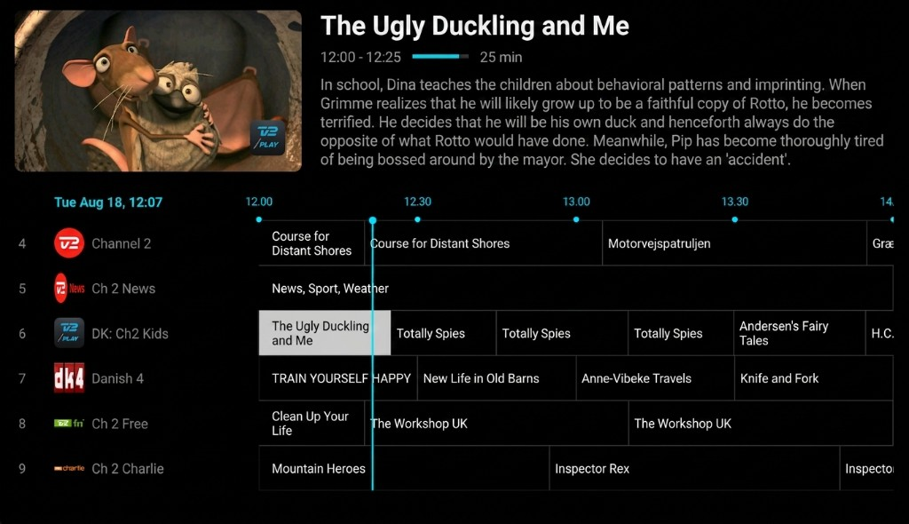
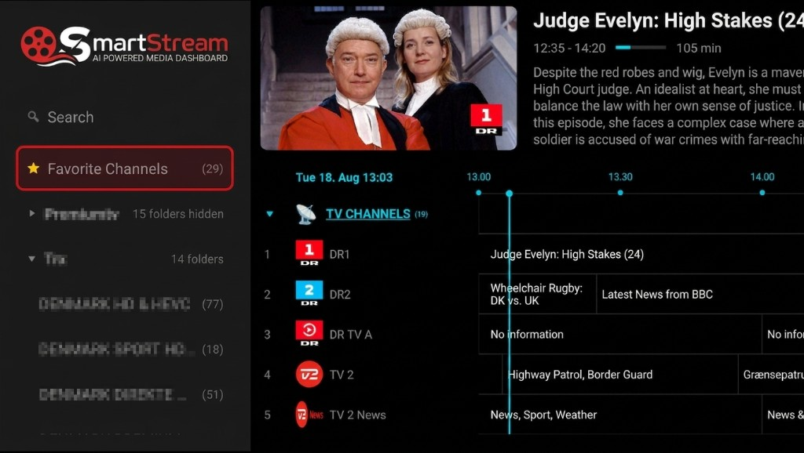
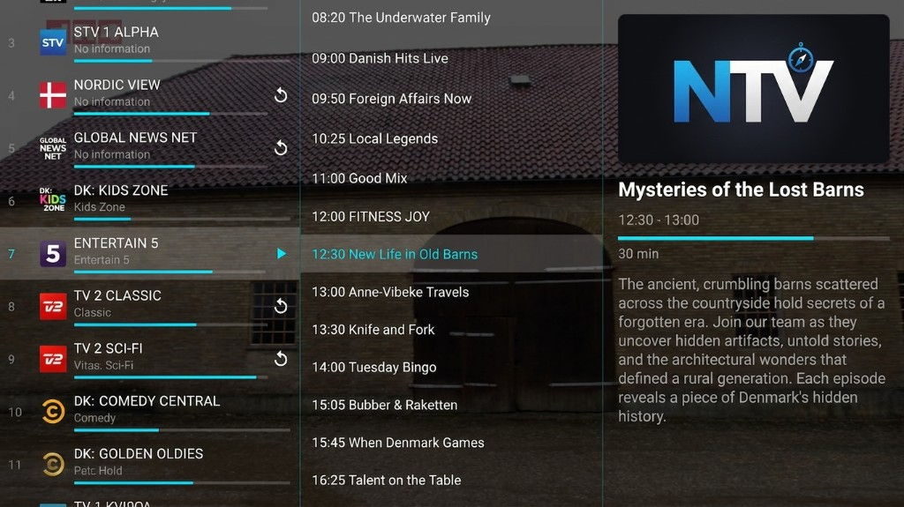

3. Daily use — Live TV
Open Live TV in the left menu. You get a program guide (EPG) with a live preview. Press OK on the current programme to watch fullscreen — the picture continues without reconnecting.

Screenshot needed: 25-live-tv-epg.png'">Guide and folders
- The left sidebar lists your selected TV folders (per provider).
- Favorite Channels and Favorite PPVs sit at the top once you star channels.
- Search the guide from the side menu to find a programme or channel.
- If your provider supports catch-up, you can start a past programme from the guide.
Favorite Channels and multiple streams
A favorite is not limited to one provider. You can attach extra backup streams from other providers onto the same Favorite Channel. If one source is busy or drops, another stream is already linked.
- Add a channel to Favorite Channels or Favorite PPVs from the guide.
- You can add a whole folder at once.
- Link extra streams: from a channel, choose add stream to an existing favorite — or use Settings → Playback & Live TV → Live TV & EPG → Favorites → Link stream to favorites.
- The player menu (OK in fullscreen) lets you switch streams by hand if several are linked.
- PPV folders can show only active events, and can sort by start time.
- Set or remove a reminder on a programme. How many minutes before start is under Settings → Playback & Live TV → Live TV & EPG.

Screenshot needed: 27-live-tv-favorites.png'">Linked backups are what Intelligent stream switching uses when a stream fails.
Fullscreen

Screenshot needed: 26-live-tv-fullscreen.png'">- Up / Down — zap to the next or previous channel
- Left — open the on-screen guide overlay
- Right — jump back to the previous channel
- OK — player menu (info, tracks, stream switch if several streams are linked)
- Back — return to the guide (does not close the app)